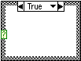
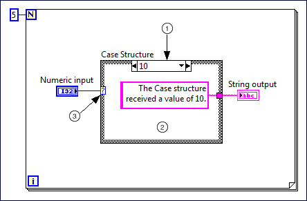
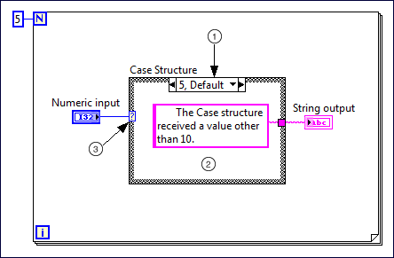

Case Structure
Owning Palette: Structures
Requires: Base Development System
Contains one or more subdiagrams, or cases, exactly one of which executes when the structure executes. The value wired to the case selector determines which case to execute.

 Add to the block diagram Add to the block diagram |
 Find on the palette Find on the palette |
Components of a Case Structure
|  |  |
 |
Selector label—Displays the value(s) for which the associated case executes. You can specify a single value or a range of values. You also can use the selector label to specify a default case. |
 |
Subdiagram(case)—Contains the code that executes when the value wired to the case selector matches the value that appears in the selector label. To modify the number or order of subdiagrams, right-click the border of the Case structure and select the appropriate option. |
 |
Case selector—Selects which case to execute based on the value of the input data. The input data can be a Boolean, string, integer, enumerated type or error cluster. The data type you wire to the case selector determines the allowed cases you can enter in the selector label. |
Configuring a Case Structure
Rearranging a Case Structure
- Adding subdiagrams between other subdiagrams
- Moving between subdiagrams
- Shifting subdiagrams to a different position in the order of subdiagrams
- Swapping the subdiagrams of two cases
- Removing a Case structure without deleting contained code
Troubleshooting a Case Structure
Example
Refer to the Case Structure - Selector Data Types VI in the labview\examples\Structures\Case Structure directory for an example of using the Case Structure.
 Open example Find related examples
Open example Find related examples